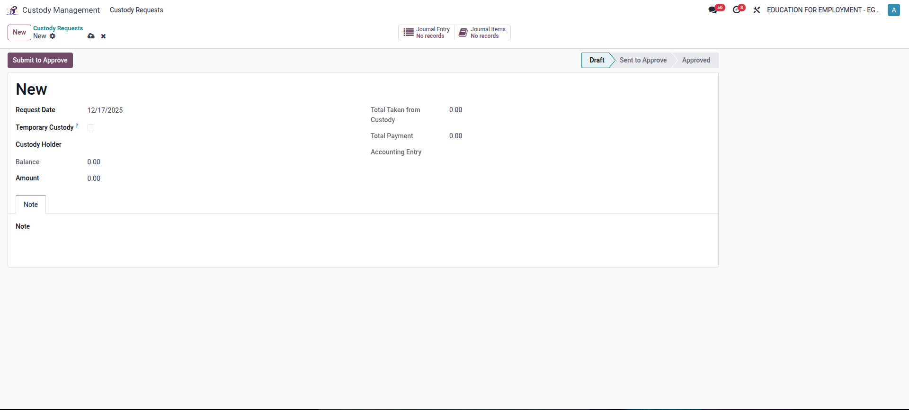
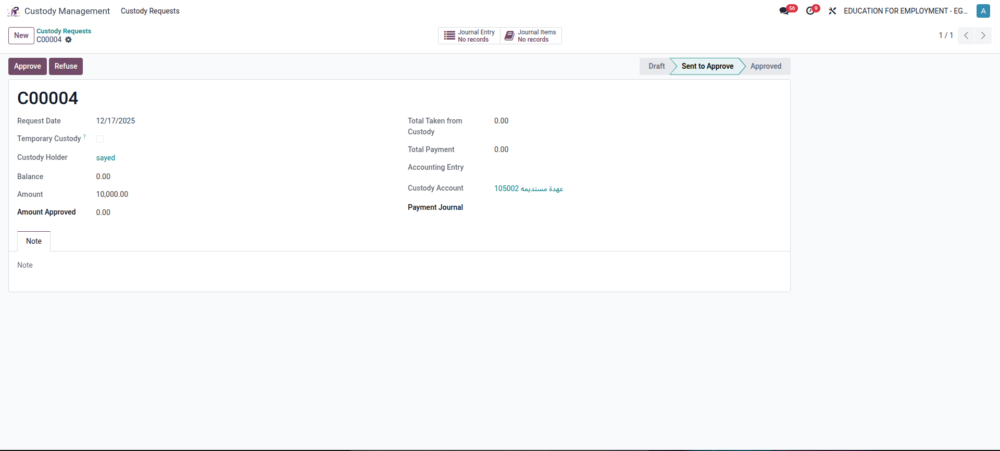
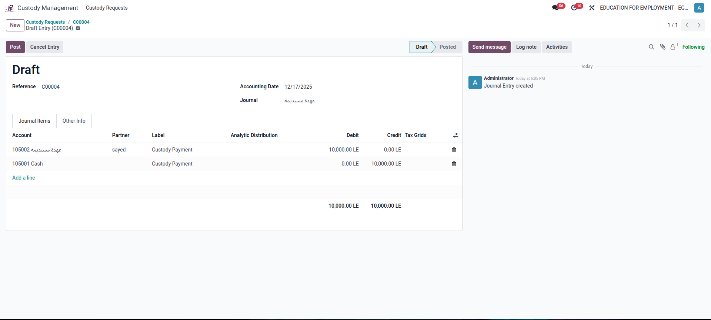
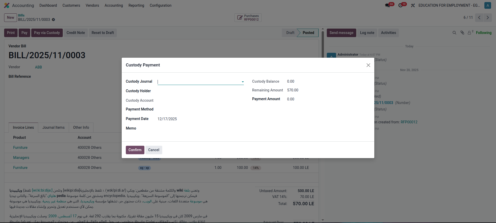
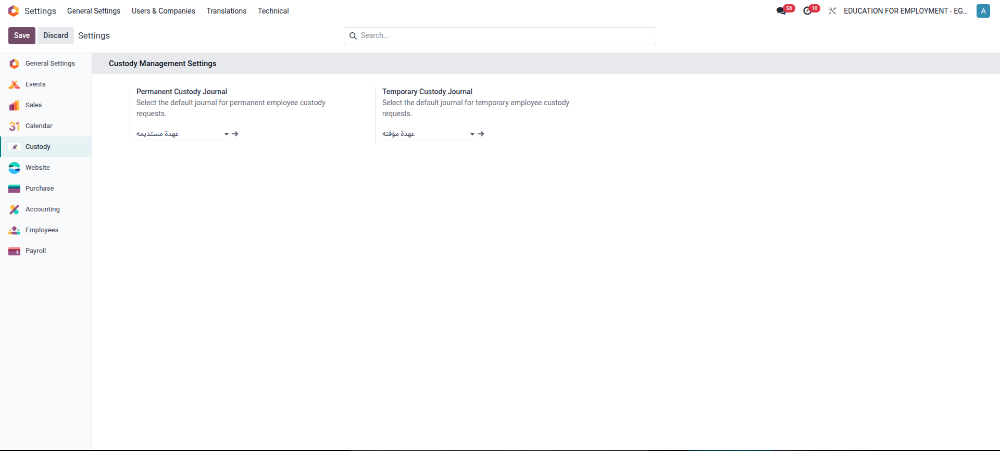

This module provides a complete solution to manage employee custody requests, approvals, accounting entries, and payments through Odoo Accounting. It supports both temporary and permanent custody with full integration into journal entries and vendor bill payments.
Employees can create custody requests, specify amounts, and submit them for approval. Managers can approve or refuse requests and create accounting entries once approved.

Custody requests follow a clear approval workflow. Notifications and activities are automatically scheduled for approvers and request creators.

Once approved, custody requests can automatically generate accounting entries based on configured custody journals. Journal items are fully traceable.

Vendor bills can be paid directly using employee custody through a dedicated wizard. The system automatically creates correct accounting move lines for custody payments.

Administrators can configure separate journals for temporary and permanent custody directly from Odoo General Settings.

This module ensures full control over employee custody management with proper accounting compliance, transparency, and traceability inside Odoo.